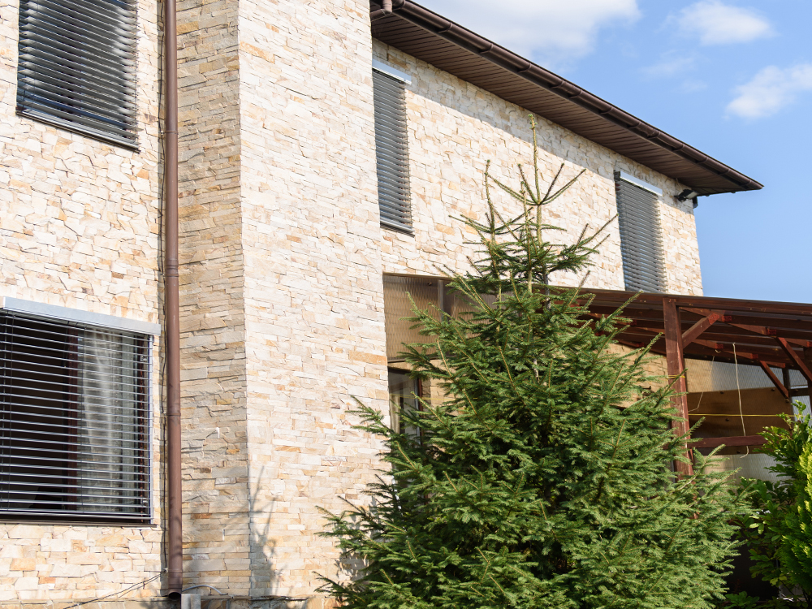

Нашите модели
Соларен навес
Иновативно решение, което съчетава сянка и добив на енергия. Соларният навес предпазва от топлина и генерира електричество чрез вградени соларни панели.
- Производство на електроенергия: до 180W/m²
- Автоматично регулиране на наклона

Очаквайте скоро
Ролетни външни щори със соларни панели
Подходящи за фасади и балкони, с висока устойчивост на атмосферни условия.
- Производство на електроенергия: до 150W/m²
- Устойчивост на дъжд и вятър
 Очаквайте скоро
Очаквайте скоро
Вътрешни хоризонтални щори със соларни панели
Класически дизайн за офиси и жилища.
- Производство на електроенергия: до 80W/m²
- Лесна поддръжка
 Очаквайте скоро
Очаквайте скоро
Вътрешни вертикални щори със соларни панели
Подходящи за големи прозорци и витрини.
- Производство на електроенергия: до 100W/m²
- Модерен дизайн
Сравнение на моделите
| Модел | Мощност | Устойчивост |
|---|---|---|
| Соларен навес | 180W/m² | Много висока |
| Ролетни външни | 150W/m² | Висока |
| Хоризонтални вътрешни | 80W/m² | Средна |
| Вертикални вътрешни | 100W/m² | Средна |